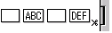

Sample effects when file open is executed multiple times (such as during continuous printing of different labels)
| If specified by enumerator value beginning with bpo | If directly specified by numeric value | Print result | |
|---|---|---|---|
| Auto cut without bpoContinue | ObjDoc.Open (***.lbl) ObjDoc.DoPrint bpoAutoCut, "0" ObjDoc.Open (****.lbl) ObjDoc.DoPrint bpoAutoCut, "0" |
ObjDoc.Open (***.lbl) ObjDoc.DoPrint &H1, "0" ObjDoc.Open (****.lbl) ObjDoc.DoPrint &H1, "0" |

|
| Auto cut with bpoContinue |
ObjDoc.Open (***.lbl) ObjDoc.DoPrint bpoAutoCut+bpoContinue, "0" ObjDoc.Open (****.lbl) ObjDoc.DoPrint bpoAutoCut, "0" |
ObjDoc.Open (***.lbl) ObjDoc.DoPrint &H40000001, "0" ObjDoc.Open (****.lbl) ObjDoc.DoPrint &H1, "0" |